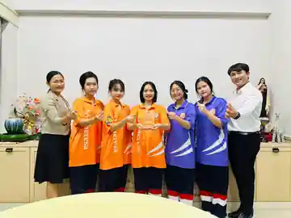

EDUCATOR · RESEARCHER · INNOVATOR
ยินดีต้อนรับสู่พื้นที่รวบรวมประสบการณ์และผลงาน
นายธีระวัฒน์
ทุ่งคำ.
THEERAWAT THUNGKHAM
นักการศึกษาที่สนใจเชื่อมโยง งานวิจัย เทคโนโลยี และนวัตกรรม เข้ากับการจัดการศึกษา เพื่อสร้างการเรียนรู้ที่มีคุณค่าและการเปลี่ยนแปลงอย่างยั่งยืน
SAINT THERESA SCHOOL · BANGKOK, THAILAND

SCROLL TO DISCOVER↓EST. 2026
ผลงานเด่นที่น่าสนใจ
ดูรางวัลและผลงานทั้งหมด →รางวัล · 2569ATINA Model · นวัตกรรมระดับดีเยี่ยมบทบาทที่ปรึกษาคณะผู้พัฒนานวัตกรรมการจัดการเรียนรู้อ่านรายละเอียด →สิ่งแวดล้อม · 2566โรงเรียนปลอดขยะ ชนะเลิศระดับประเทศผู้รับผิดชอบและร่วมขับเคลื่อนโครงการของโรงเรียนอ่านรายละเอียด →งานวิจัย · 25693E2R · ThaiCER 2026บทความวิจัยได้รับคัดเลือกให้นำเสนอในการประชุมวิชาการอ่านรายละเอียด →

ข่าวผลงานนักเรียน · SOFT POWER OF THAILANDทีม IGNITE คว้ารางวัลรองชนะเลิศอันดับ 2การแข่งขันแผนธุรกิจโดยมหาวิทยาลัยเทคโนโลยีราชมงคลกรุงเทพ · ครูที่ปรึกษา นายธีระวัฒน์ ทุ่งคำ และนางสาวกนจพร แซ่โค้ว อ่านข่าวและชมภาพ →